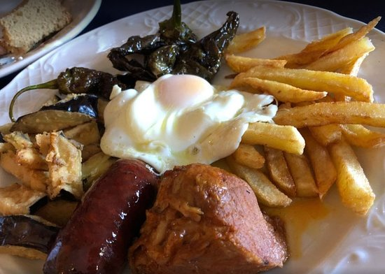

Gastronomía de Málaga
La gastronomía de Málaga es el conjunto de platos típicos en la mesa de la provincia de Málaga, España. Es una cocina marinera, encuadrada dentro de la gastronomía de Andalucía, y por lo tanto recibe influencias de todos los pueblos del Mediterráneo. Las influencias de las cocinas Son famosos los salazones fenicios y romanos, la repostería árabe de miel y frutos secos y las técnicas de cocina castellana.Al ser una tierra que se encuentra entre el mar mediterráneo y la serranía, ofrece un gran abanico de posibilidades debido a la diversidad de materias primas, entre las cuales se destacan el pescado, sobre todo por ser una provincia costera, y las carnes típicas de las numerosas sierras y las hortalizas de la vega de Málaga.
Debido a esta diversidad, los platos de pescado se alternan perfectamente con platos de carne y embutidos de gran calidad. Podemos hacer una clasificación de platos por entrantes, primeros y segundos platos y postres.
Frutas y Verduras
Existen diversas preparaciones con verduras, entre ellas las ensaladas siendo la más tradicional de todas la ensalada malagueña, a base de patatas cocidas, pimiento, tomate, huevos cocidos, naranjas y bacalao, todo ello regado con aceite de oliva. Algunas Sopas como en el resto de Andalucía son tradicionales las sopas frías, particularmente en la provincia, el ajoblanco a base de aceite de oliva, ajo y almendras, además del gazpacho andaluz y su variante la porra antequerana, y el zoque. entre las sopas calientes: en blanco de pescado (emblanco), caldo con pescado blanco (tradicionalmente bacalao), el gazpachuelo, una sopa de pescado similar al en blanco rebajada con mahonesa, la sopa de almendras, sopa cachorreña, a base de naranjas cachorreñas, sopa de espárragos trigueros, las sopas perotas, tradicionales de álora, sopa de rape, sopa de tomate, sopa viña ab, maimones, sopa de coquinas etc. Verduras y hortalizas: gracias a la rica agricultura malagueña que nos ofrecen productos frescos y muy variados se pueden preparar platos exquisitos como alcachofas rellenas, berenjenas con bechamel, berenjenas rellenas, calabacines rellenos, cebollas rellenas, espinacas con pasas y almendras, lechugas en salsa, morrete de espárragos, patatas a lo pobre.

Pescados
Que decir sobre el apartado de pescado, es una ciudad costera donde los productos son totalmente frescos y donde presenta más variedad que en cualquier otro tipo de platos. Son variados, creativos y frescos y sobre todo muy sanos al realizarse con productos totalmente naturales. En la costa de Málaga podrá disfrutar de platos de fritura malagueña. También disfrutará de las sabrosas y variadas frituras de pescado (pescado enharinado y frito en abundante aceite de oliva, a fuego muy fuerte y durante cortísimo tiempo). Por tanto nos podemos encontrar pescados y mariscos variados cocinados fritos o cocidos, como los famosos espetos de sardinas que se comen a pie de playa. Hay también una gran variedad de platos a base de pescado, por ejemplo: los fideos con bacalao, las papandúas, almejas y diferentes pescados, almejas, atún mechado, calamares rellenos a la malagueña, cazón en amarillo, dorada a la sal con pimientos, lenguado en salsa con uvas moscatel, róbalo al horno, mejillones en pipirrana, medallones de rape al estilo perchelero, moraga de sardinas, la pescada gratinada con aceitunas, pescado en adobo, buñuelos de bacalao, el fritura malagueña, la tortilla de sardinas y los boquerones en vinagre.

Carnes
En lo que se refiere a la carne está más centrada en la sierra, especialmente en la Serranía de Ronda, que ofrece excelentes preparaciones de carne de caza, verduras y hortalizas y embutidos de creación propia como las morcillas. En las ventas de carretera de los Montes de Málaga es típico el plato de los montes: un plato combinado a base de huevos frito, patatas y pimiento frío; chorizo y lomo. Mereciendo adicionalmente destacar el "Rabo de toro a la Rondeña". Además son reseñables: conejo a la cortijera, choto serrano, pavo asado con manzanas, rabo de toro, pepitoria de gallina, perdices adobadas en escabeche, perdices en salmorejo, perdiz del pastor, pollo salteado al vino de Málaga, solomillo de cerdo a la malagueña, ternera mechada y sesos de ternera rebozados. Los guisos berza malagueña, callos a la andaluza, cazuela de fideos con coquinas, almejas a la malagueña, cocido de chícharos y habas, cocido malagueño, potaje de castañas y judías, potaje de garbanzos, potaje de lentejas, fideos a banda, gachas, migas cortijeras, papas en adobillo, papas a la malagueña, habas a la andaluza, menestra a la rondeña, arroz caldoso con bacalao, arroz a la parte.
Dulces y postres
En el apartado de postres destacan las recetas monacales, especialmente en Antequera, como los populares roscos y tortas de almendra, las magdalenas o el "Bienmesabe". Los churros se denominan en la capital y algunas pueblos del interior como tejeringos. Entre otros, caben destacar además: Bizcocho de naranja, bollos de aceite, empanadillas de batatas, flan de castañas, carne de membrillo, mostachones de piñones, naranjas al vino de Málaga, pan de higo de Coín, polvo de batatas, Polvorones, tarta de aguacate, tarta de café, tortas de aceite, las Tortas Locas y -en verano- el granizado de almendra de Valle de Abdalajis. En Semana Santa son típicos los pestiños y las torrijas al vino de Málaga. En Navidad, no faltan de la mesa malagueña: los mantecados, alfajores, los borrachuelos generalmente aderezados al vino de Málaga y los roscos de vino.